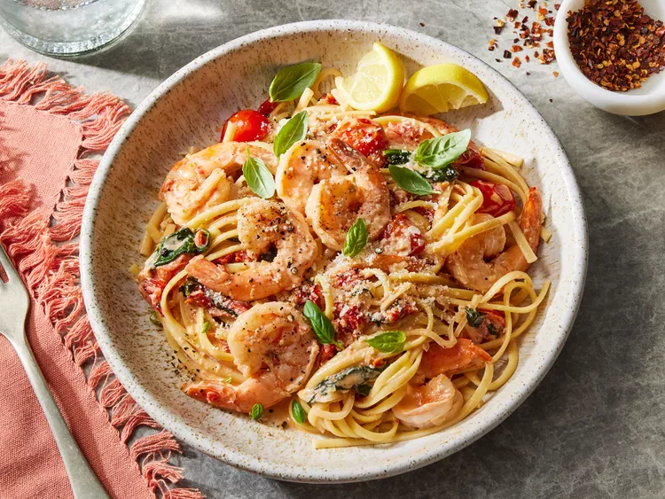

Tuscan Butter Shrimp

These Tuscan butter shrimp, in a delightful cherry tomato and sun-dried tomato cream sauce,
can be served over pasta or polenta, or with a salad and toasted sourdough bread.
Ingredients
- 1 pound peeled, deveined large raw shrimp, patted dry
- 1 teaspoon kosher salt
- 1/2 teaspoon freshly ground black pepper
- 2 tablespoons unsalted butter, divided
- 2 tablespoons oil from jar of oil-packed sun-dried tomatoes, divided
- 1 1/2 cups cherry tomatoes, halved
- 1/2 cup thinly sliced shallot
- 3 garlic cloves, thinly sliced
- 1/2 cup drained and finely chopped sun-dried tomatoes in oil
- 1 cup packed fresh baby spinach
- 1/2 cup loosely packed fresh basil leaves, sliced, plus more for garnish
- 1/2 cup dry white wine
- 1 teaspoon grated lemon zest
- 1/4 teaspoon crushed red pepper
- 1 cup heavy cream
- 2 ounces Parmesan cheese, grated, plus more for garnish
- 1 teaspoon fresh lemon juice